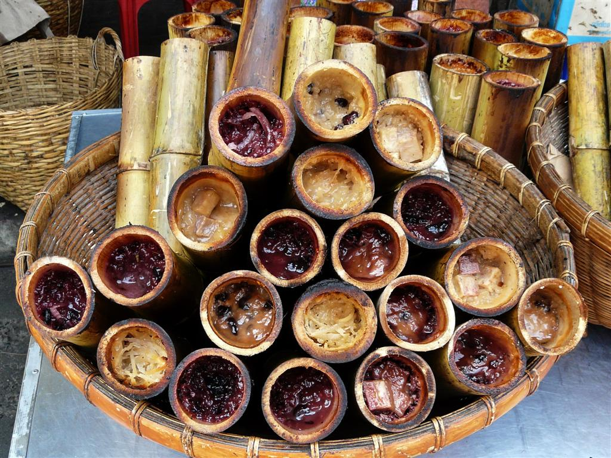
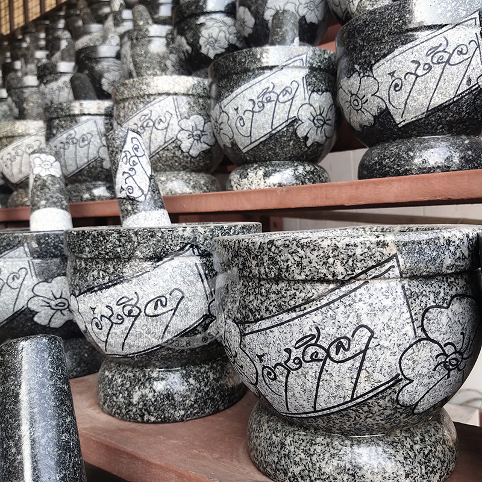

ของหวานขึ้นชื่อของอำเภอเมืองชลบุรี (ตลาดหนองมน) ทำจากข้าวเหนียว กะทิ และถั่วดำ อบในกระบอกไม้ไผ่ มีรสชาติหอมหวานมัน

สินค้าหัตถกรรมที่มีชื่อเสียงมาช้านาน ทำจากหินแกรนิตเนื้อดีที่ตำบลอ่างศิลา มีความแข็งแรงทนทาน ใช้สำหรับตำน้ำพริกและเครื่องแกง
